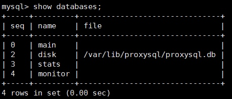
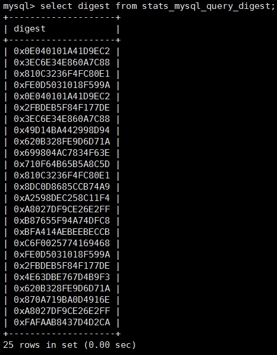

使用ProxySQL做数据库审计
为什么要使用中间件做审计
数据库审计是数据库运维中的一项重要手段，mysql的主流发行版本都提供有各种数据库审计的插件。
Oracle公司对MySQL企业版提供了官方的审计插件。
Mcafee公司也对MySQL提供了相应的审计插件。
但是审计插件的使用会有一定的性能开销，并且也存着相应的风险。
但是如果我们使用了中间件后，在中间件中对MySQL做审计，则完全没有了这样的顾虑。
使用proxysql做审计
使用proxysql做审计的思路很简单，在proxysql的转发规则中我们可以设置对指定规则记录日志。那么我们就可以对一些敏感操作进行审计。
首先，我们来创建一个存放日志的目录：
mkdir -p /data/ProxySQL/log
然后在ProxySQL中配置日志的地址
# 首先进入管理端口：
$ mysql -uadmin -padmin -h127.0.0.1 -P6032
# 然后设置变量，并加载和持久化：
set mysql-eventslog_filename = ‘/data/ProxySQL/log/sql.log’
LOAD MYSQL VARIABLES TO RUNTIME;
SAVE MYSQL VARIABLES TO DISK;
在mysql_query_rules表中设置路由规则
# 记录所有delete操作
Insert into mysql_query_rules(rule_id,active,match_digest,log,apply) values(1000,1,’^delete’,1,1)
这样，所有通过proxysql的delete操作都会记入日志
但是proxysql的日志时二进制格式的，我们需要通过proxysql提供的一个工具eventslog_reader_sample进行解析
但是我们安装的rpm包里并没有这个工具，我们需要单独下载并编译它
在 https://github.com/sysown/proxysql/tree/v1.4.2/tools 我们可以看到eventslog_reader_sample.cpp和Makefile文件
我们需要下载并make一下，就可以生成可用的工具了。
tips
我在编译eventslog_reader_sample的时候遇到了一些问题，在编译好以后使用eventslog_reader_sample解析二进制log时会报错
这可能和proxysql的版本有关系，在eventslog_reader_sample执行时会判断log文件的第一个字节是否为0x00，而我输出的log都是以0x81开头的。所以总会报错。
解决的方法是修改cpp文件，我直接将99-105行的判断
switch (et) {
case PROXYSQL_QUERY:
read_query(f);
break;
default:
break;
}
给去掉了，直接改成了
read_query(f);
再进行编译，然后就可以用了。
以上。
ProxySQL安装与配置
安装
- 从github上下载相应的rpm包
- 使用 yum localinstall proxysql-1.4.1-1-centos7.x86_64.rpm 安装
启动
- Service proxysql start
配置文件
- 文本配置文件
- ProxyQSL使用一个配置文件的（/etc/proxysql.cnf），但是这个配置文件只在第一次启动时使用，一般不需要修改
- SQLite配置文件
- ProxySQL在第一次启动后就会使用SQLite文件（/var/lib/proxysql/proxysql.db）来加载和持久化配置项，并且这种配置方式支持在线修改
登录
- ProxySQL默认的管理端口是6032
- ProxySQL默认的服务端口是6033
- ProxySQL默认的用户名和密码都是admin
库结构
登录到管理端口，使用show databases;
在管理端口中有4个库，分别是：
Admin：默认数据库，存放服务器、用户、路由等的配置信息。以”runtime_“开头的表是当前运行中的配置，不能直接修改。通过修改没有前缀的表，使用”LOAD“加载配置，使用”SAVE“持久化配置。Disk：存储配置的SQLite数据库Stats：各种命令的统计信息Monitor：对于后端数据库的监控信息
配置表
各种配置所使用到的表都在main库中
mysql> show tables from main;tables 说明 global_variables 全局变量，，具体可见https://github.com/sysown/proxysql/wiki/Global-variables mysql_collations 字符集相关 mysql_group_replication_hostgroups MySQL Group Replication信息 mysql_query_rules 路由规则信息 mysql_replication_hostgroups 定义hostgroup的主从信息 mysql_servers 后端MySQL节点 mysql_users 用户配置 proxysql_servers runtime_global_variables runtime_mysql_group_replication_hostgroups runtime_mysql_query_rules runtime_mysql_replication_hostgroups runtime_mysql_servers runtime_mysql_users runtime_proxysql_servers runtime_scheduler scheduler 定时器 数据库节点设置（mysql_servers）
- 这张表主要配置hostgroup的相关信息。路由时会根据设置的规则将相关SQL路由到指定的hostgroup。而在同一hostgroup中又根据权重分发SQL语句。
用户设置（mysql_users）
- 配置客户端连接proxysql（frontend）和proxysql连接数据库（backend）的用户。目前这两个值都默认为1。以后可能会分开。
主从关系设置（mysql_replication_hostgroups）
- 根据read_only值来判断主从。可以不配置。
路由规则设置（mysql_query_rules）
Proxysql会根据主键rule_id的顺序加载路由规则。
Username/client_addr/schemaname：只有用户、地址和schema匹配时规则才会生效。
Proxysql会先检查flagIN=0的规则
如果规则匹配，且flagIN=flagOUT或者flagOUT=NULL或者apply=1，则应用这条规则；否则，根据flagOUT的值，去匹配下一条flagIN等于该值的规则
Digest/match_digest/match_pattern：这三个值都是用来匹配查询的。
Digest匹配的值类似于stats_mysql_query_digest表中的digest列
Match_digest匹配的值类似于stats_mysql_query_digest中的digest_text列

Match_pattern匹配的是未经修改过的SQL语句
Negate_match_pattern：对match_digest/match_pattern的匹配值取反
重写SQL：重写SQL最好使用match_pattern作为匹配项，使用replace_pattern作为重写后的SQL，二者都遵循正则表达式

Copyright © 2015 Powered by MWeb, Theme used GitHub CSS.